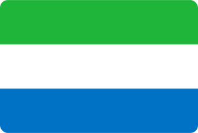

Serra Leoa
Isolada pelo oceano, a região em que se localiza Serra Leoa permaneceu afastada da influência dos grandes impérios que se estabeleceram no alto Níger por volta do ano 1000. Os povos que a habitavam encontravam-se então divididos em pequenos Estados independentes.
Cultura
A cultura de Serra Leoa é marcada por um conjunto de tradições tribais provenientes dos nativos que habitavam o território antes da chegada dos colonizadores. Os grupos étnicos locais possuem danças e manifestações artísticas próprias. A confecção de máscaras é uma tradição do país, sendo o principal produto do seu artesanato.
Informações gerais
PIB 1,935 milhões
Moeda: Leone
África Ocidental
5.696.471 habitantes
Significado da bandeira
A bandeira é uma tricolor de verde, branco e azul. O verde representa a agricultura, as montanhas e os recursos naturais. O azul é o símbolo da esperança de que o porto natural de Freetown venha a contribuir para a paz no mundo. O branco representa a unidade e a justiça.